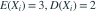

独立同分布，
独立同分布，
。当 时， 依概率收敛于多少？- A

- B

- C
- D
我已思考，展开答案与解析
正确答案：C
- 由大数定律 （依概率），由连续映射得 。
易错提醒极限代入的是总体均值，而不是总体二阶矩。
数学三·概率统计基础专题 · 数学三概率统计基础专题·原创第27题
按数学三常见概率统计知识点原创；不是历年真题或教材原题。
独立同分布，
。当 时， 依概率收敛于多少？数学三·概率统计基础专题 · 数学三概率统计基础专题·原创第27题
按数学三常见概率统计知识点原创；不是历年真题或教材原题。